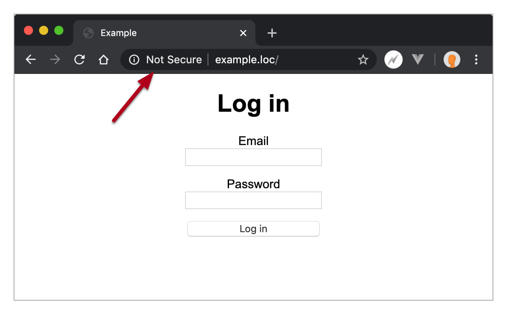

HTTPS
What is HTTPS?
Hypertext transfer protocol secure (HTTPS) is the secure version of HTTP, which is the primary protocol used to send data between a browser and server.
HTTPS has two primary goals/advantages:
- Data transferred via HTTPS is encrypted so that if the data is compromised in the transfer via a man in the middle attack, the hacker would only see encrypted data.
- HTTPS provides a means of validating the identity of domains and servers by establishing a server as trusted and genuine by a Certificate Authority (CA).
HTTPS is now expected
It used to be that HTTPS was only used/expected for sensitive data transfer, such as logins, interactions with bank accounts, a health provider, etc.
Now, however, it’s become best practices for all data transfers to be encrypted, and modern browsers will flag sites that are not using HTTPS.
How does HTTPS work?
HTTPS uses Transport Layer Security (TLS) (formerly known as Secure Sockets Layer (SSL)) to encrypt communication.
TLS secures communications by using an asymmetric public key infrastructure, i.e. it uses two different keys to encrypt communication between two parties (browser + server):
- Private key - this key is controlled by the owner of a website and it’s kept private. This key lives on a web server and is used to decrypt information encrypted by the public key.
- Public key - this key is available to everyone who wants to interact with the server in a way that’s secure. Information that’s encrypted by the public key can only be decrypted by the private key.
HTTPS on production
To enable HTTPS, we need a certificate from a Certificate Authority (CA).
These can be purchased and range in cost from about $5 upwards of $100+ (example price/tier options from Namecheap...).
Alternatively, we can get a free certificate from Let’s Encrypt which is a non-profit Certificate Authority.
Using Let’s Encrypt will allow us achieve the goal of encrypting our data transfer, however, it does not offer the same level of domain/server validation that a paid-for certificate will. You should consider a paid-for certificate in any situation where you’re collecting/processing sensitive data (personal information, monetary transactions, etc.) and/or you want to communicate to your users that your site is secure and trustworthy.
If curious, here are supplemental notes on how to set up a paid SSL certificate...
Certbot - Let’s Encrypt
An easy way to set up a Let’s Encrypt certificate is to use a command line tool called Certbot, which comes pre-installed on our DigitalOcean servers.
To begin, simply run the command certbot on production; it will prompt you to enter
an
email:
root@e28:~# certbot
Saving debug log to /var/log/letsencrypt/letsencrypt.log
Plugins selected: Authenticator apache, Installer apache
Enter email address (used for urgent renewal and security notices) (Enter 'c' to
cancel): susanbuck@fas.harvard.edu
Next, it will prompt you to agree to their Terms of Service and indicate whether you want to receive emails from the Let’s Encrypt foundation:
- - - - - - - - - - - - - - - - - - - - - - - - - - - - - - - - - - - - - - - -
Please read the Terms of Service at
https://letsencrypt.org/documents/LE-SA-v1.2-November-15-2017.pdf. You must
agree in order to register with the ACME server at
https://acme-v02.api.letsencrypt.org/directory
- - - - - - - - - - - - - - - - - - - - - - - - - - - - - - - - - - - - - - - -
(A)gree/(C)ancel: a
- - - - - - - - - - - - - - - - - - - - - - - - - - - - - - - - - - - - - - - -
Would you be willing to share your email address with the Electronic Frontier
Foundation, a founding partner of the Let's Encrypt project and the non-profit
organization that develops Certbot? We'd like to send you email about our work
encrypting the web, EFF news, campaigns, and ways to support digital freedom.
- - - - - - - - - - - - - - - - - - - - - - - - - - - - - - - - - - - - - - - -
(Y)es/(N)o: n
Next it will ask you what site(s) you want to activate HTTPS for, pulling from the existing sites you’ve set in your VirtualHosts config file. You can choose an individual option here, or just leave it blank and hit enter so HTTPS will be set up for all the sites. In this example, I will do the latter.
Which names would you like to activate HTTPS for?
- - - - - - - - - - - - - - - - - - - - - - - - - - - - - - - - - - - - - - - -
1: zipfoods.hesweb.xyz
2: [your other domains will be listed here...]
3: [your other domains will be listed here...]
4: [your other domains will be listed here...]
- - - - - - - - - - - - - - - - - - - - - - - - - - - - - - - - - - - - - - - -
Select the appropriate numbers separated by commas and/or spaces, or leave input
blank to select all options shown (Enter 'c' to cancel):
After hitting enter, it will proceed to set up your certificate:
Obtaining a new certificate
Performing the following challenges:
http-01 challenge for zipfoods.hesweb.xyz
Waiting for verification...
Cleaning up challenges
Created an SSL vhost at /etc/apache2/sites-available/000-default-le-ssl.conf
Deploying Certificate to VirtualHost /etc/apache2/sites-available/000-default-le-ssl.conf
Enabling available site: /etc/apache2/sites-available/000-default-le-ssl.conf
Created an SSL vhost at /etc/apache2/sites-available/000-default-le-ssl.conf
Deploying Certificate to VirtualHost /etc/apache2/sites-available/000-default-le-ssl.conf
Created an SSL vhost at /etc/apache2/sites-available/000-default-le-ssl.conf
Deploying Certificate to VirtualHost /etc/apache2/sites-available/000-default-le-ssl.conf
Created an SSL vhost at /etc/apache2/sites-available/000-default-le-ssl.conf
Deploying Certificate to VirtualHost /etc/apache2/sites-available/000-default-le-ssl.conf
Finally, it will ask you to choose whether regular http traffic should be left alone or
redirected to https; I suggest going with redirect and choosing option 2:
Please choose whether or not to redirect HTTP traffic to HTTPS, removing HTTP access.
- - - - - - - - - - - - - - - - - - - - - - - - - - - - - - - - - - - - - - - -
1: No redirect - Make no further changes to the webserver configuration.
2: Redirect - Make all requests redirect to secure HTTPS access. Choose this for
new sites, or if you're confident your site works on HTTPS. You can undo this
change by editing your web server's configuration.
- - - - - - - - - - - - - - - - - - - - - - - - - - - - - - - - - - - - - - - -
Select the appropriate number [1-2] then [enter] (press 'c' to cancel): 2
After the above question, you’ll see the final confirmation details:
Redirecting vhost in /etc/apache2/sites-enabled/000-default.conf to ssl vhost in /etc/apache2/sites-available/000-default-le-ssl.conf
Redirecting vhost in /etc/apache2/sites-enabled/000-default.conf to ssl vhost in /etc/apache2/sites-available/000-default-le-ssl.conf
Redirecting vhost in /etc/apache2/sites-enabled/000-default.conf to ssl vhost in /etc/apache2/sites-available/000-default-le-ssl.conf
Redirecting vhost in /etc/apache2/sites-enabled/000-default.conf to ssl vhost in /etc/apache2/sites-available/000-default-le-ssl.conf
- - - - - - - - - - - - - - - - - - - - - - - - - - - - - - - - - - - - - - - -
Congratulations! You have successfully enabled
https://zipfoods.hesweb.xyz, https://e28p1.hesweb.xyz, https://e28p2.hesweb.xyz, and https://e28p3.hesweb.xyz
You should test your configuration at:
https://www.ssllabs.com/ssltest/analyze.html?d=zipfoods.hesweb.xyz
https://www.ssllabs.com/ssltest/analyze.html?d=e28p1.hesweb.xyz
https://www.ssllabs.com/ssltest/analyze.html?d=e28p2.hesweb.xyz
https://www.ssllabs.com/ssltest/analyze.html?d=e28p3.hesweb.xyz
- - - - - - - - - - - - - - - - - - - - - - - - - - - - - - - - - - - - - - - -
IMPORTANT NOTES:
- Congratulations! Your certificate and chain have been saved at:
/etc/letsencrypt/live/zipfoods.hesweb.xyz/fullchain.pem
Your key file has been saved at:
/etc/letsencrypt/live/zipfoods.hesweb.xyz/privkey.pem
Your cert will expire on 2021-03-03. To obtain a new or tweaked
version of this certificate in the future, simply run certbot again
with the "certonly" option. To non-interactively renew *all* of
your certificates, run "certbot renew"
- If you like Certbot, please consider supporting our work by:
Donating to ISRG / Let's Encrypt: https://letsencrypt.org/donate
Donating to EFF: https://eff.or
Once the above is complete, you should now be able to access your sites via https.
How it works
Let’s dissect what happened above to understand how https is configured...
First, https VirtualHost configs were created in a special https-specific VirtualHosts config file at
etc/apache2/sites-available/000-default-le-ssl.conf.
Here is an example of one of those configs:
<IfModule mod_ssl.c>
<VirtualHost *:443>
ServerName zipfoods.hesweb.xyz
DocumentRoot /var/www/html/e28/e28-api/core/public/
<Directory /var/www/html/e28/e28-api/core/public/>
AllowOverride All
Options -Indexes
Require all granted
</Directory>
SSLCertificateFile /etc/letsencrypt/live/zipfoods.hesweb.xyz/fullchain.pem
SSLCertificateKeyFile /etc/letsencrypt/live/zipfoods.hesweb.xyz/privkey.pem
Include /etc/letsencrypt/options-ssl-apache.conf
</VirtualHost>
</IfModule>
Note how this config is very similar to our regular VirtualHost configs with these key differences:
- It's listening on port 443 (https) instead of port 80 (http)
- It includes a reference to...
- the public key at
/etc/letsencrypt/live/zipfoods.hesweb.xyz/fullchain.pem - the private key at
/etc/letsencrypt/live/zipfoods.hesweb.xyz/privkey.pem.
- the public key at
In addition to adding the new https-specific VirtualHost configs, our existing non-http VirtualHost
configs (/etc/apache2/sites-available/000-default.conf) were edited so that non-http
traffic
is redirected to https:
Example:
<VirtualHost *:80>
ServerName zipfoods.hesweb.xyz
DocumentRoot "/var/www/html/e28/zipfoods/dist"
<Directory "/var/www/html/e28/zipfoods/dist">
AllowOverride All
Options -Indexes
Require all granted
</Directory>
RewriteEngine on
RewriteCond %{SERVER_NAME} =zipfoods.hesweb.xyz
RewriteRule ^ https://%{SERVER_NAME}%{REQUEST_URI} [END,NE,R=permanent]
</VirtualHost>
Deleting a Certbot key
You can revoke an existing certificate following this command pattern:
$ certbot delete --cert-name zipfoods.hesweb.xyz
Once that is complete...
- Remove the relevant VirtualHost block from
/etc/apache2/sites-enabled/000-default-le-ssl.conf. - Update the relevant VirtualHost block in
/etc/apache2/sites-available/000-default.confso it’s no longer redirecting http traffic. - Restart Apache:
service apache2 restart